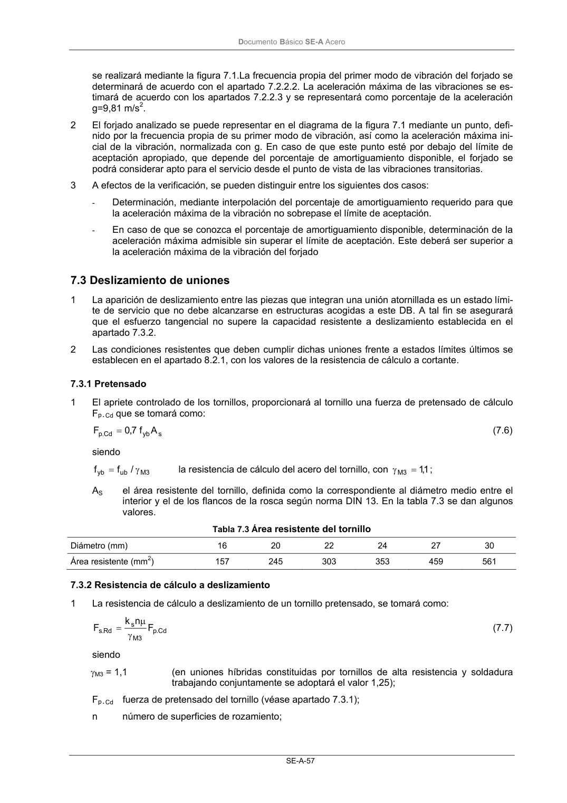

DB-SE-A · 7.2.2.5 Verificación · versión 2007-10-23 · capa oficial
Formatos: JSON compacto · Markdown · PDF fuente
Ámbito del documento · texto del ámbito · documento y tablas
ID técnico a0099 · PDF pág. 58-59 · jerarquía no validada por persona · contrastado con el literal de la página 58 (candidato tipográfico); no validado por persona · padre: raíz
7.2.2.5 Verificación 1 La verificación, desde el punto de vista de la percepción humana, del comportamiento frente a las vibraciones transitorias de los forjados en edificios de viviendas, oficinas, escolares o comerciales DocumentoBásico SE-A Acero SE-A-57 se realizará mediante la figura 7.1.La frecuencia propia del primer modo de vibración del forjado se determinará de acuerdo con el apartado 7.2.2.2. La aceleración máxima de las vibraciones se es- timará de acuerdo con los apartados 7.2.2.3 y se representará como porcentaje de la aceleración g=9,81 m/s2. 2 El forjado analizado se puede representar en el diagrama de la figura 7.1 mediante un punto, defi- nido por la frecuencia propia de su primer modo de vibración, así como la aceleración máxima ini- cial de la vibración, normalizada con g. En caso de que este punto esté por debajo del límite de aceptación apropiado, que depende del porcentaje de amortiguamiento disponible, el forjado se podrá considerar apto para el servicio desde el punto de vista de las vibraciones transitorias. 3 A efectos de la verificación, se pueden distinguir entre los siguientes dos casos: - Determinación, mediante interpolación del porcentaje de amortiguamiento requerido para que la aceleración máxima de la vibración no sobrepase el límite de aceptación. - En caso de que se conozca el porcentaje de amortiguamiento disponible, determinación de la aceleración máxima admisible sin superar el límite de aceptación. Este deberá ser superior a la aceleración máxima de la vibración del forjado

PDF fuente redistribuible: copia fiel enlazada en esta página (SHA256 verificado).